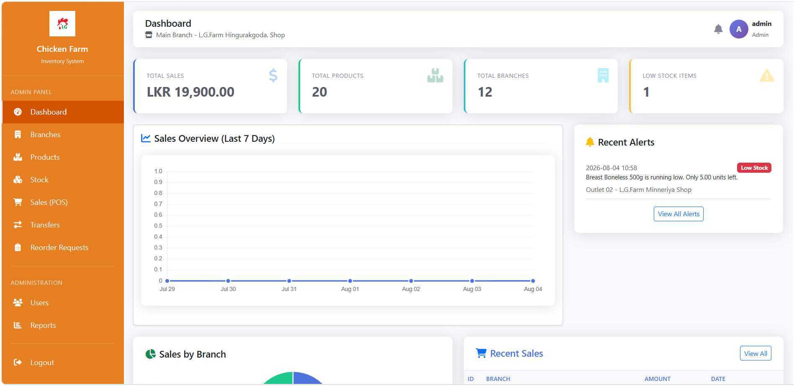
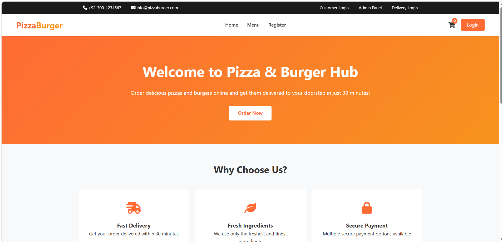
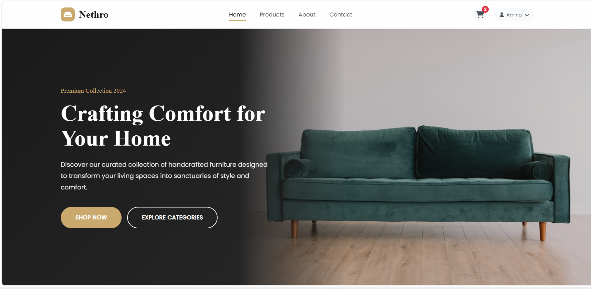

2023 - Present
Higher National Diploma in Information Technology
Sri Lanka Institute of Advanced Technological Education (SLIATE) | Ampara
HNDIT Student | Aspiring Web Developer
I build thoughtful web experiences while developing a strong foundation in software engineering. I am looking for an internship where I can learn from an experienced team and contribute with care.
I am an HNDIT student with a developing foundation in software and web development. Through academic projects, I have explored Java, PHP, C#, HTML, CSS, JavaScript, and MySQL while practicing how to turn requirements into usable applications. I enjoy understanding problems, breaking them into manageable steps, and improving solutions through feedback. I am eager to gain industry experience, learn from a professional development team, and contribute as a dependable intern.

A responsive historical tourism website that introduces visitors to important places in Polonnaruwa, including Gal Vihara and the Royal Palace.
Tech Stack: HTML5, CSS3, JavaScript

A complete web-based inventory management system built for chicken farms. It helps track stock, manage products, record sales, and generate operational reports.
Tech Stack: PHP, MySQL, HTML, CSS, JavaScript

A complete web-based food ordering platform that connects customers, administrators, and delivery staff in one workflow.
Tech Stack: PHP, MySQL, HTML, CSS, JavaScript

A modern e-commerce website concept for handcrafted furniture, designed to support product discovery, online shopping, and store administration.
Tech Stack: PHP, MySQL, HTML, CSS, JavaScript
2023 - Present
Sri Lanka Institute of Advanced Technological Education (SLIATE) | Ampara
2025 - Present
LPEC Campus
2026
University of Colombo
2025
University of Colombo
2022
Open University of Sri Lanka
2022
Open University of Sri Lanka
2019
Open University of Sri Lanka
Open to new opportunities and internships. Let's connect!